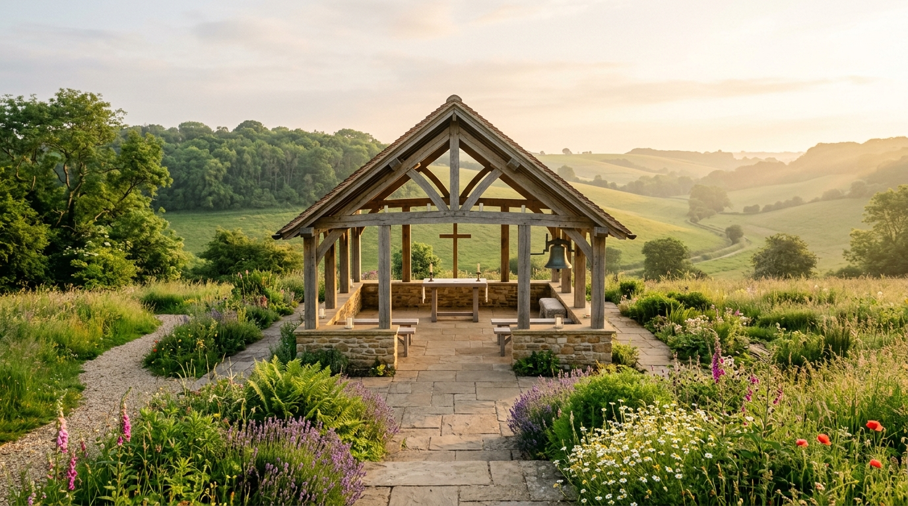

"Knowledge Enables Choice." A world-based micro-church facilitating conscious connection to the omnipresent Creator under the bathing light of the Father.
To all whose souls have taken form, the House of Strauss provides what the Creator has willed of us to be: a sanctuary. A place of transformation and restoration, a place of illumination under the bathing light of the one and only almighty Father.
We believe that through the power of words there can be the creation of things as the Father has done for us in Genesis 1:3: "And God said, 'Let there be light,' and there was light." It is the primary mission of the House of Strauss to assure that the culmination of the written remains solely for the purpose of inspiring creation from the place of intelligentsia by the sole powers of His voice.
We allow for a space by presence of self-realization of the Creator through the healing mechanisms of the natural world, which has always included what can and cannot be perceived—from plants to frequencies, seeable and imperceptible. We share our God-given talents and spiritual missions to aid living souls in their inward discovery toward the divinity within.

Under Matthew 10:1: "And when he had called unto him his twelve disciples, he gave them power against unclean spirits, to cast them out, and to heal all manner of sickness and all manner of disease."
Through sound, word, vibration, and herbal stewardship, the sanctuary fosters deep biological and spiritual alignment, shedding the distortion of secular commercial environments.
Communicants and living families find an unshakeable ground of peace, clarity, and private association to fulfill their God-ordained purpose.
The House of Strauss operates exclusively under the ecclesiastical jurisdiction of the Mission House Ecclesia and the written divine laws of the Creator and Holy Scripture. We hold full ecclesiastical immunity and maintain private association with all communicants.
All pastoral records, confessions, sanctuary trusts, and ministerial appointments are sacred confidences, protected under ecclesiastical privilege, divine trust, and Den Haag Apostille legalization.
"And God said, 'Let there be light,' and there was light." Through the divine utterance of truth, reality is shaped and illuminated.
"He gave them power against unclean spirits, to cast them out, and to heal all manner of sickness and all manner of disease."